毎年、学生たちが神前を訪れ、集落を歩き、村の未来を一緒に考えてきました。その一日と、生まれた提案の記録です。Every year, students come to Kouzaki, walk the hamlet, and think through the village's future together with the people who live here. This is a record of those days, and of the ideas they gave rise to.
京都大学の農学部では、村づくりを学ぶ授業の一環として、毎年ひと組の学生たちが神前を訪ねます。集落を歩いて隠れた魅力と課題を見つけ、一日かけて「こうすれば元気になるのでは」という提案をつくり、住民のみなさんに発表する——。地元の力添えがあってこそ続けてこられた、神前ならではの学びの場です。In Kyoto University's Faculty of Agriculture, one group of students visits Kouzaki each year as part of a course on village-making. They walk the hamlet to find its hidden charms and the challenges it faces, spend a day shaping proposals for how the place might come alive again, and present them to the residents. It is a learning ground found nowhere else — one that has carried on only thanks to the help of the local community.
今年のワークショップ ― 2026年7月12日（日）の予定を見る →This year's workshop — see the plan for Sunday, 12 July 2026 →
はじまりは2010年。神前ふるさとを守る会の活動を、京都大学が視察に訪れたことでした。翌2011年からは総務省の研究プロジェクト（SCOPE）の一環として、iPadやFacebookを使った情報発信の講習会など9回の行事を地域と大学で重ね、2013年6月、村づくりワークショップの第1回が開かれます。テーマの多くは、地域の側から提案されてきました。It began in 2010, when Kyoto University came to observe the work of the Kouzaki Hometown Preservation Society. From 2011, as part of a research project under the Ministry of Internal Affairs and Communications (SCOPE), the village and the university held nine events together — among them workshops on sharing local news with iPads and Facebook — and in June 2013 the first village-making workshop opened. Many of the themes, over the years, have come from the community's own side.
学生31名が初めて神前を訪れました。FacebookやWeb中継も取り入れた実験的な回で、集落を歩き、「田舎こうざき」などの将来ビジョンを提案しました。Thirty-one students came to Kouzaki for the very first time. It was an experimental round that folded in Facebook and live web streaming; they walked the hamlet and offered visions of its future, among them "Inaka Kouzaki" (Kouzaki, the countryside).
留学生も加わった回。「NOWSON de LAWSON ― 農村にもコンビニを!!」など、若者らしい提案が並びました。International students joined this round. Youthful ideas lined up one after another — like "NOWSON de LAWSON — a convenience store for the countryside too!!"
動き出したばかりの「チョロギ村」構想がテーマに。立ち上げ資金の調達方法として、クラウドファンディングを提案する班もありました。The theme was the just-launched "Chorogi Village" concept. One group even proposed crowdfunding as a way to raise the money to get it off the ground.
参加31名。守る会が提示したこのテーマを、全班が正面から考えました。Thirty-one took part. Every group met this theme, set by the Preservation Society, head-on.
参加35名。会場に古民家カフェが加わり、獣害対策にドローンやAIをあてる「けものはのけもん わかもんはカモン!!」など、ユニークな提案が生まれました。ドローン空撮のデモンストレーションも行われた年です。Thirty-five took part. An old-farmhouse café was added to the venue, and one-of-a-kind ideas emerged — such as "Kemono wa Nokemon, Wakamon wa Kamon!!," turning drones and AI on the problem of wildlife damage. It was also the year of a drone aerial-photography demonstration.
参加24名。昼食はチョロギ村レストランの薬膳御膳。集落ウォーキングでは薪窯ピザ庵の店主や宝林寺のご住職のお話も加わりました。Twenty-four took part. Lunch was the medicinal-cuisine set at the Chorogi Village Restaurant. On the hamlet walk, the owner of the wood-fired pizza hut and the head priest of Hōrin-ji temple joined in with their stories.
参加39名。「わくわく就農プラン・らくらく移住プラン」「薬膳村として、令和の健康村」など。この年の成果報告書は、のちに集落の農業計画の資料編にも収められました。Thirty-nine took part, with ideas like "The Exciting Farming Plan / The Easy Move-In Plan" and "A Medicinal-Cuisine Village — a health village for the Reiwa era." The report from this year was later gathered into the appendix of the hamlet's own farming plan.
2年間の中止。その間もオンライン会議などで、地域と大学の交流は続きました。再開後の2022年からの記録は、下に詳しくまとめています。Two years off. Even so, the village and the university kept in touch through online meetings and the like. The record from 2022 onward, after the workshops resumed, is set out in detail below.
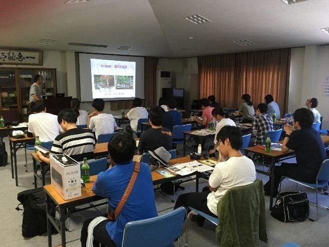
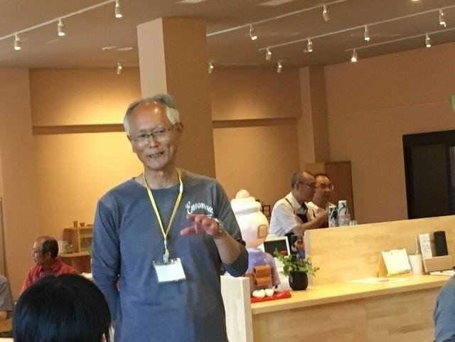
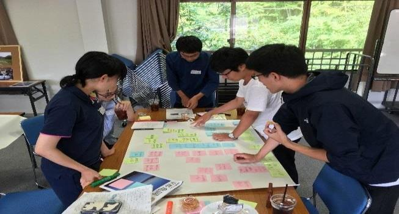
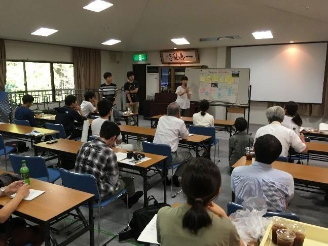
コロナ禍で2年間の中止を経て、3年ぶりに再開した年。宝林寺や北ノ奥作業場をめぐる集落ウォーキングで村を取材し、チョロギ村レストランで昼食のあと、守る会顧問から「これまでのWSと神前の村づくり」の報告を受けて、住民のみなさんと一緒に提案づくりに取り組みました。The year the workshop came back after two years lost to the pandemic. Students got to know the village on a hamlet walk that took in Hōrin-ji temple and the Kita-no-oku workshop; then, after lunch at the Chorogi Village Restaurant and a talk by an adviser to the Preservation Society on "The workshops so far, and village-making in Kouzaki," they set about building proposals together with the residents.
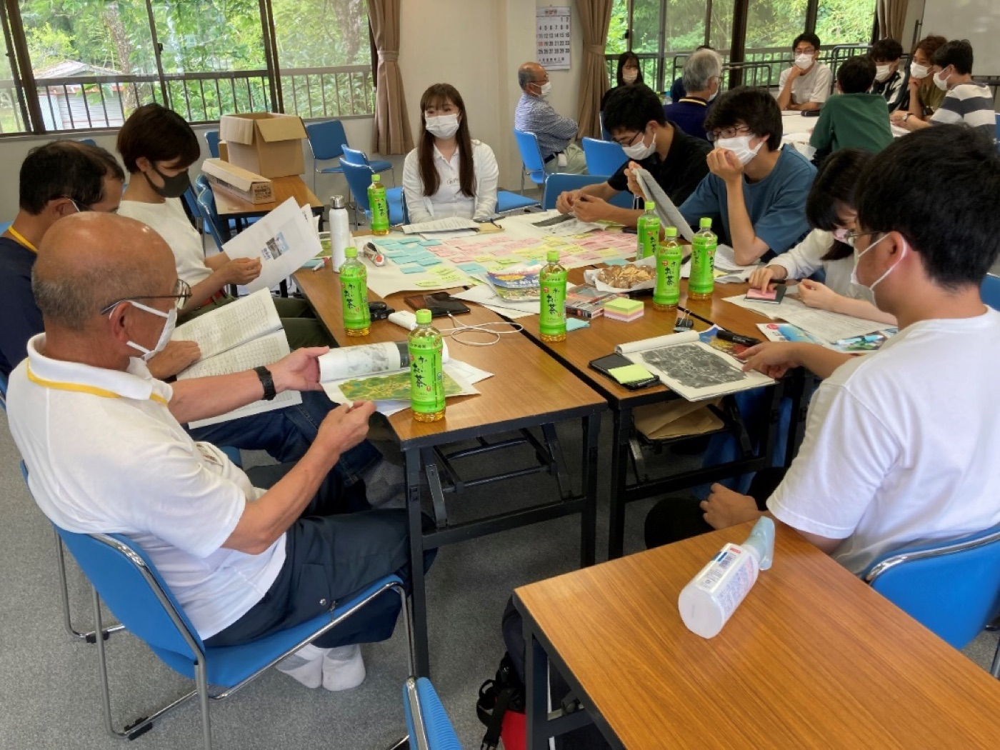
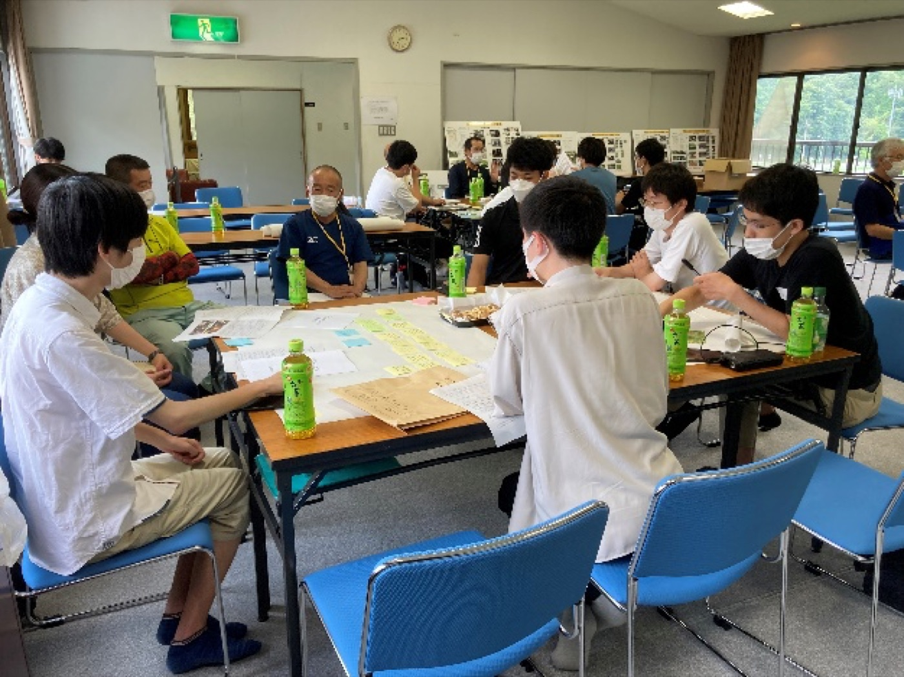
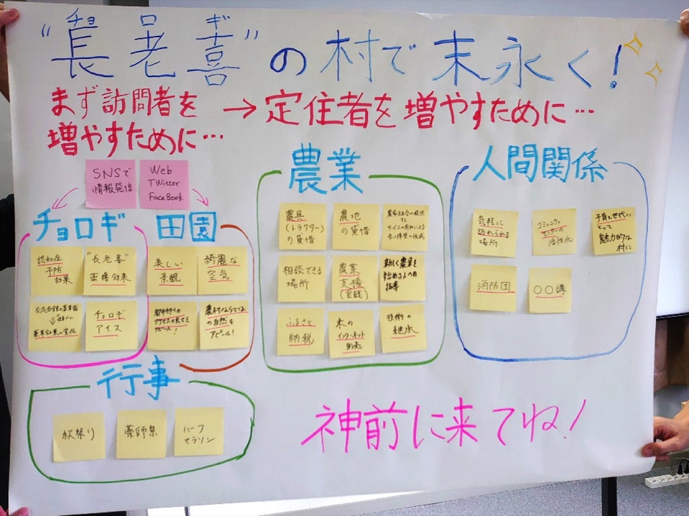
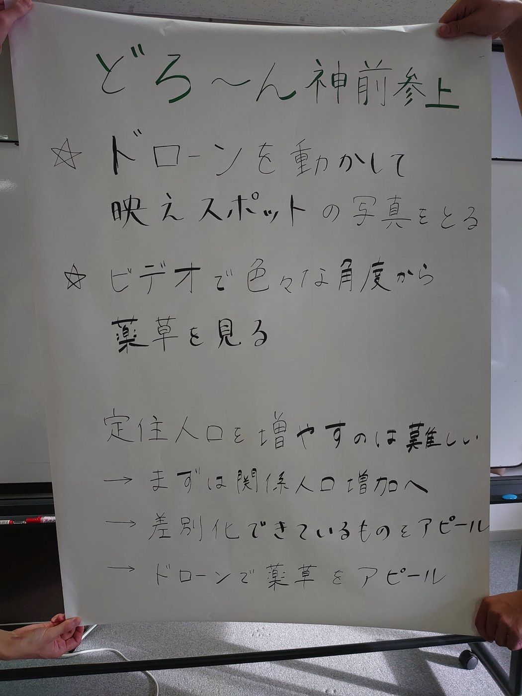
「とかい」の便利さと「いなか」の良さを両立する村へ。アクセス改善や遊休農地の遊び場化、農泊・農地オーナー制度、全世代で地域の魅力を学び直す「郷土学」を提案。A village that holds onto both the convenience of the city (tokai) and the good of the country (inaka). Their ideas: better access, turning idle farmland into places to play, farm-stays and a farmland-owner scheme, and a "local studies" course in which every generation relearns what makes the place special.
車を持ち、農業以外の職に就く都市部の若い移住者がターゲット。チョロギや薬膳、景観、祭りをSNSで発信し、兼業しやすい暮らしの支援や神前米のブランド化で受け皿を整える。The target: young city-dwellers who own a car and work outside farming. Put chorogi, medicinal cuisine, the scenery and the festivals out on social media, then ready the landing pad — support for a life that blends farming with other work, and branding for Kouzaki rice.
健康志向の高まりを追い風に、薬膳を神前の看板に。「自分たちで育てた農産物で薬膳定食を作って食べる」複合型の農業体験で、まず「来たくなる」集落を目指す。With growing interest in health as a tailwind, make medicinal cuisine Kouzaki's calling card. Through a layered farm experience — "grow the produce yourself, then cook and share a medicinal-cuisine set meal" — first become a hamlet people want to come to.
SNSや動画での魅力発信、リモート学習による教育の補完、交流会館のワーケーション活用、夏休みの空き家「お試し移住」を組み合わせ、子育て世代の来訪と移住を後押しする。Bring together social media and video to show the village off, remote learning to fill out education, the community hall for workations, and a summer "trial move-in" at vacant houses — all to encourage families with children to visit, and to settle.
村にあるドローンで集落や薬草畑のPR動画を撮り、訪れた子どもたちがドローンで記念写真を撮れる体験に。まず若い訪問者を増やし、将来の定住のきっかけをつくる。Use the village's own drone to film promo clips of the hamlet and the herb fields, and let visiting children take keepsake photos from the air. Draw in more young visitors first, and plant the seed for settling down later.
多国籍の留学生チーム。「帰属意識（Sense of Belonging）」の醸成を軸に、AR・VRも視野に入れた発信、神前米の袋に棚田の写真とQRコードを付けてバーチャルツアーへ誘導する案などを提案。A team of international students from several countries. Building on the idea of nurturing a "sense of belonging," they reached toward AR and VR — among other things, putting a photo of the terraced rice fields and a QR code on bags of Kouzaki rice to lead people into a virtual tour.
この年の目玉はVR（バーチャルリアリティ）。一部の班は集落を歩き、一部の班はVRで村を「探検」して、それぞれ提案づくりに挑みました。昼はチョロギ村レストランで地元の味も。The centerpiece this year was VR (virtual reality). Some groups walked the hamlet; others "explored" the village in VR — and each set about shaping its own proposals. Lunch, once more, brought the local flavors of the Chorogi Village Restaurant.
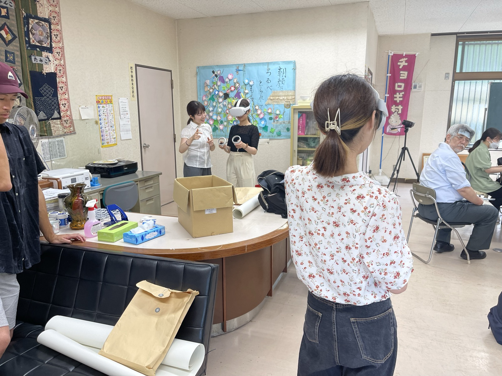
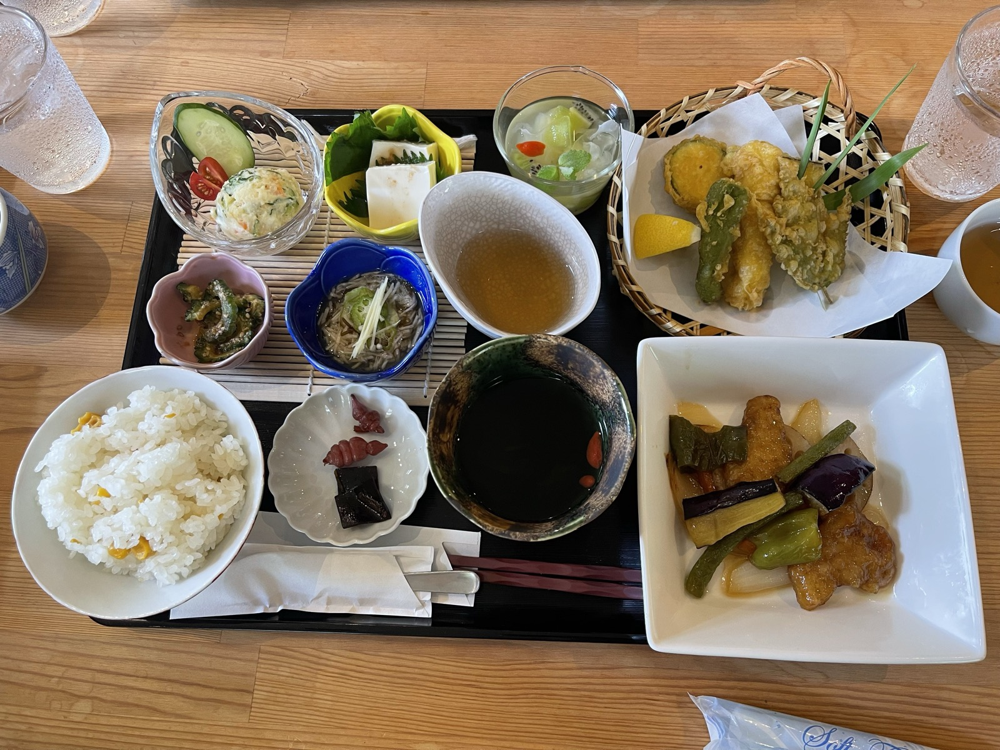
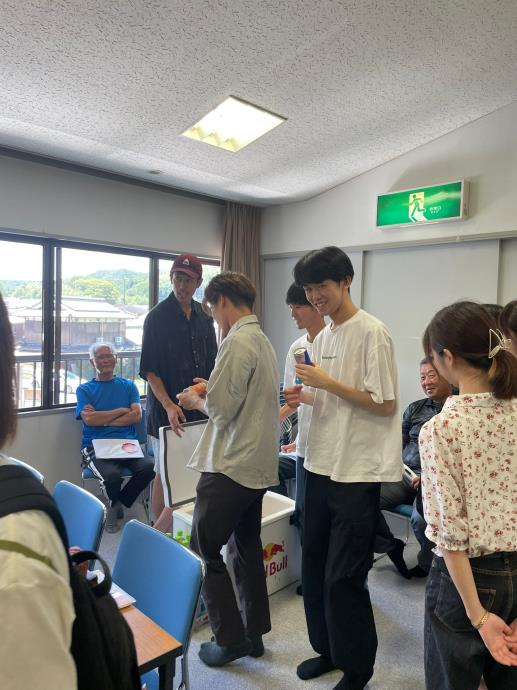
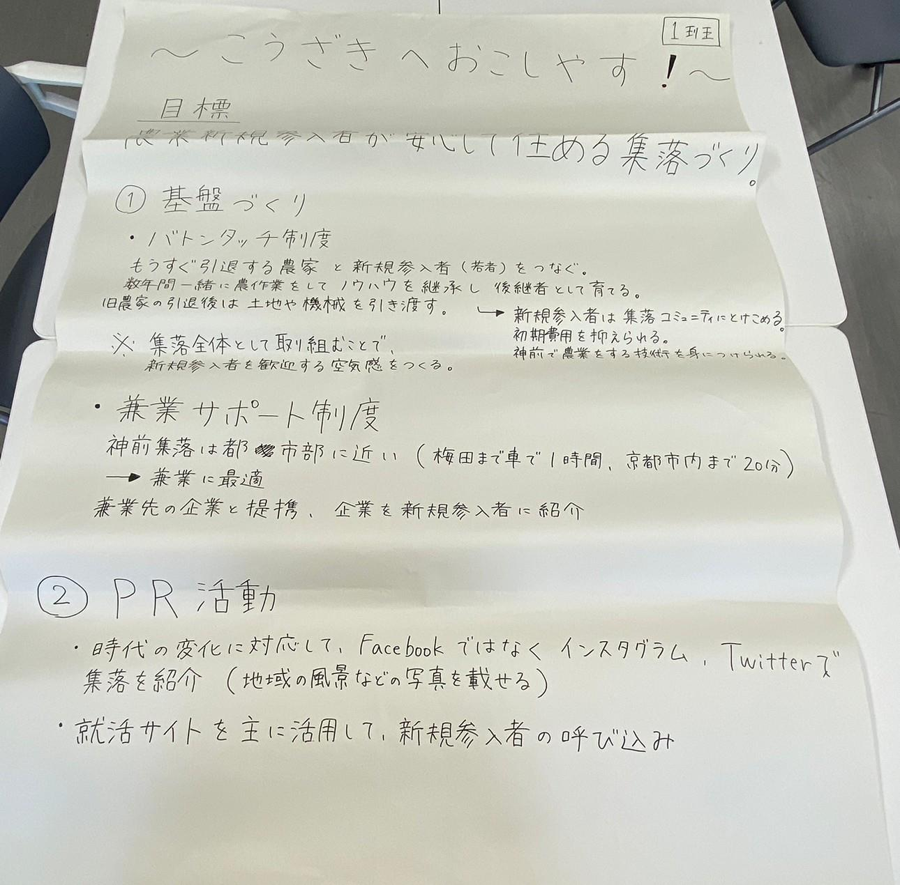
京都・大阪に近い立地を生かし、「兼業」で移住・就農する若者を地域ぐるみで支える。SNSや就活サイトでの発信も提案。Make the most of being close to Kyoto and Osaka, and rally the whole community behind young people who move in and take up farming as a sideline. They also proposed spreading the word on social media and job-hunting sites.
若者が継続的に神前に通い、関わり続ける仕組みとして農業学校を提案。資金・生徒集め・定住の3点が鍵と整理。They proposed a farming school as a way for young people to keep coming back to Kouzaki and stay involved. Funding, drawing in students, and settling down, they figured, were the three keys.
集落外の若者が「知る→体験する→移住する」の3段階で就農へ。Instagram発信、空き家を改修したシェアハウス、兼業での神前米づくりを組み合わせる。Young people from outside the hamlet reach farming in three stages — "learn → try → move in." Pair it with outreach on Instagram, a share house made from a renovated vacant home, and growing Kouzaki rice as a sideline.
チョロギソフトなどの新商品と、農業＋グランピング等の体験施設で、まず神前を知ってもらい来訪者を増やす。企業との連携も視野に。New products like chorogi soft-serve, paired with experience facilities that mix farming and glamping, to get Kouzaki known first and bring more visitors in. Tie-ups with companies were in view as well.
多国籍の留学生が、住民への聞き取り（子どもの祭り、兼業農家の暮らし、跡継ぎへの思い）をもとに、後継者問題を国際的な視点で議論。International students from several countries, drawing on interviews with residents — the children's festival, the lives of part-time farmers, feelings about who will carry things on — discussed the succession question from an international point of view.
この年からテーマは「隠れた魅力の発見」に。日本語2班・英語2班の4班が3つのエリアに分かれて集落を歩き、航空写真の上に見つけた「タネ」を貼り込みながら、提案をまとめました。From this year the theme became "finding hidden charms." Four groups — two working in Japanese, two in English — split across three areas and walked the hamlet, pinning the "seeds" they found onto an aerial photograph as they drew their proposals together.
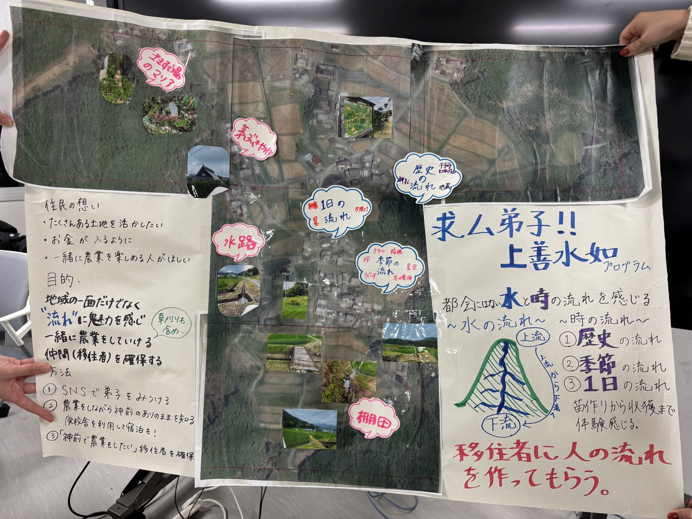
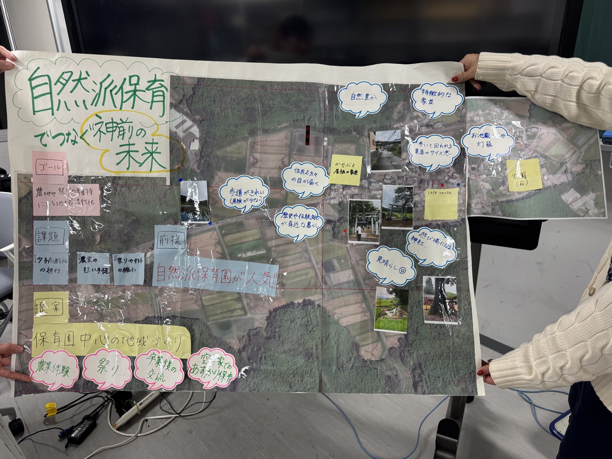
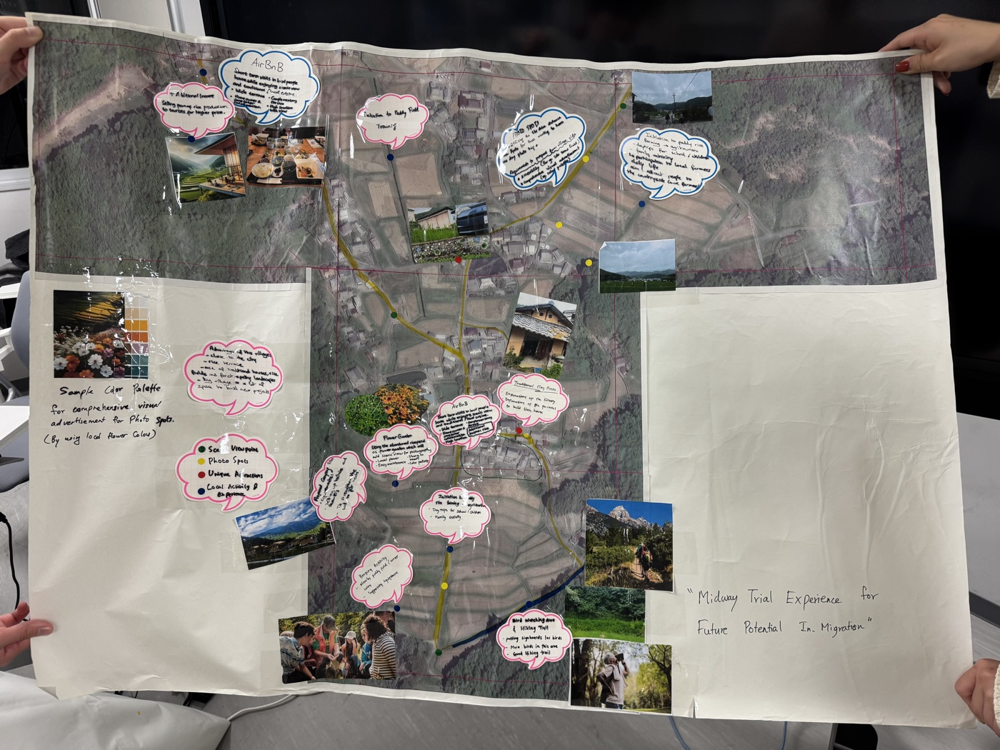
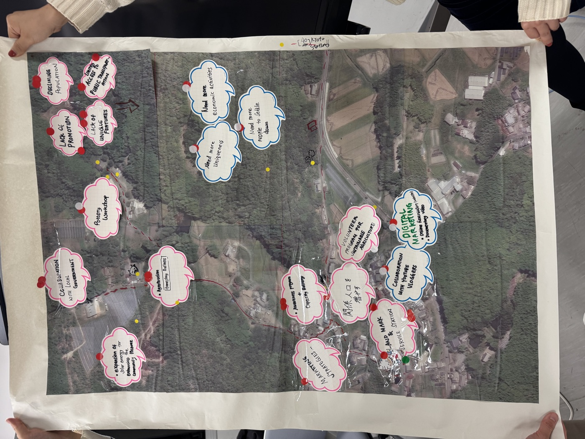
都会にはない「水と時の流れ」——歴史・季節・一日の流れを、苗づくりから収穫まで丸ごと体感してもらう。SNSで農業の“弟子”を見つけ、廃校舎での宿泊も交えて、一緒に農業をする移住者=人の流れをつくる。The flow of water and time you won't find in the city — let people feel it whole, from raising seedlings to harvest: the flow of history, of the seasons, of a single day. Find farming "apprentices" on social media, throw in stays at the old schoolhouse, and create a flow of people — new residents who farm alongside you.
人気の高まる「自然派保育」に着目し、保育園を中心にした地域づくりを提案。農業体験、祭り、卒業後の交流、空き家でのあずかり保育——子育て世代の目を神前に向ける。Taken with the growing appeal of "nature-based childcare," they proposed building the community around a nursery. Farm experiences, festivals, keeping in touch after children move on, drop-in childcare in vacant houses — all to turn young families' eyes toward Kouzaki.
農家民泊、田んぼ体験、放棄田を花畑に変えたフォトスポット、バードウォッチングと山歩き。地元の花の色を使った配色まで考え、「中くらいのお試し体験」で将来の移住につなげる構想。Farm-stays, rice-paddy experiences, a photo spot where an abandoned field becomes a flower meadow, birdwatching and mountain walks. They thought it through right down to a color palette drawn from the local flowers — a "medium-sized trial visit" meant to lead, in time, to moving in.
「魅力はあるのに知られていない」という課題に、予約サイトや紹介動画などのデジタル発信、動画配信者との連携、農業ボランティア、農家民泊を組み合わせたマーケティング戦略で挑む。Against the problem of "charm that no one knows about," they took on a marketing strategy woven from several threads — booking sites and short introductory videos and other digital outreach, tie-ups with video creators, farm volunteering, and farm-stays.
この年は7つの班（日本語6班・英語1班）が、3つのエリアに分かれて集落を歩きました。田んぼの真ん中から砥石の山まで、外から来た目にしか見えない「タネ」を拾い集めた一日です。This year seven groups (six working in Japanese, one in English) split across three areas and walked the hamlet. From the middle of the paddies to the whetstone hills, it was a day of gathering up the "seeds" that only an outsider's eye can catch.
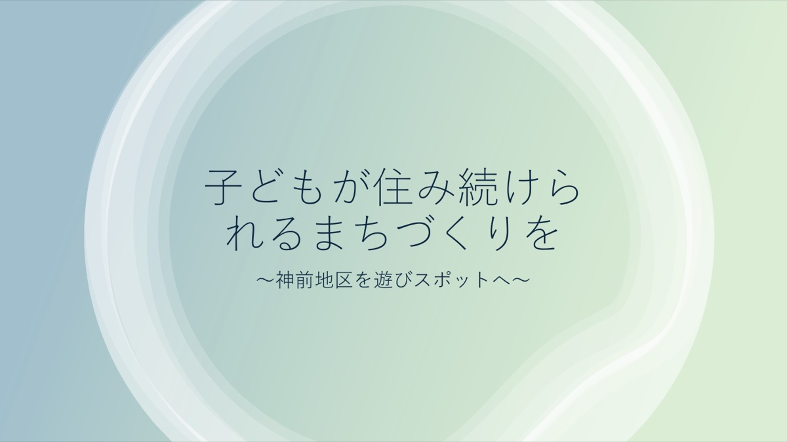
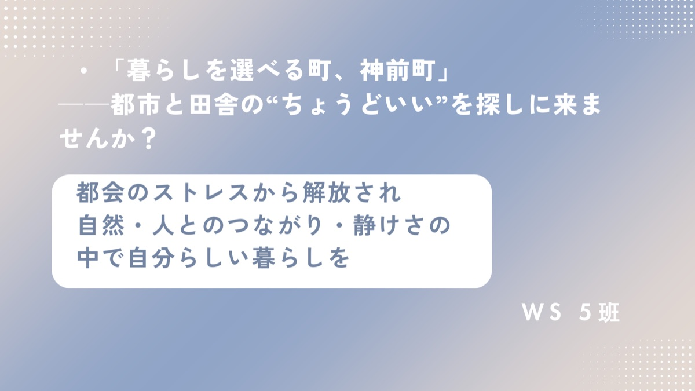
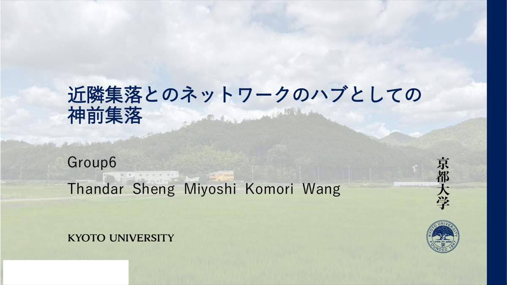
食味ランキング特Aの神前米とアクセスの良さを武器に、京都・大阪の若者や親子向けの週末農業体験ツアーを。関係人口を増やし、ゆくゆくは移住の選択肢に。With top-rated "Special A" Kouzaki rice and easy access as their strengths, a weekend farm-experience tour for young people and families from Kyoto and Osaka. Grow the connected population, and, further down the road, make moving in one of the choices.
「子どもが住み続けられるまちづくり」を掲げ、廃校跡地や砥石の跡地を活用した子ども食堂と森のアスレチックを提案。子育て世帯の移住を見据える。Under the banner of "building a town where children can keep on living," they proposed a children's cafeteria and a forest adventure playground on the sites of the closed school and the old whetstone works — with families with children moving in firmly in view.
京都市から高速で1時間弱という近さに着目。砥石の包丁研ぎ体験や薬草・神前米・黒毛和牛を掛け合わせた「食」、かやぶき屋根を宿に再生する「住」、交流センターでの環境教育——観光資源を仕事づくりにつなげ、村に関わる人を増やす。They seized on how close it is — under an hour from Kyoto City by expressway. A knife-sharpening experience on the local whetstone; "food" that layers herbs, Kouzaki rice and Japanese Black beef; "lodging" that brings a thatched roof back to life as an inn; environmental education at the community center — turning tourism assets into work, and drawing more people into the life of the village.
砥石館の包丁研ぎ体験、お寺の座禅、映画のオープンセット——豊富な観光資源を入口に、単なる来訪者ではなく「地域の営みに加わってくれる人」を増やす流れを構想。A knife-sharpening experience at the whetstone museum, zazen meditation at the temple, an open-air film set — using this wealth of tourism assets as the way in, they imagined a flow that brings not just visitors but "people who join in the work of the community."
都会に疲れた30代や、定年後の田舎暮らしを望む60代がターゲット。いきなりの移住は不安——だから、農業体験つきのお試し移住・短期滞在の仕組みから始める。Their target: people in their thirties worn down by the city, and people in their sixties who long for country living after retirement. Moving in all at once feels daunting — so begin with a scheme of trial move-ins and short stays that come with a taste of farming.
棚田景観、映画ロケ地、寺社仏閣という文化的な魅力に注目。観光で認知度を高め、ファミリー層の移住と農業の担い手確保につなげる。They turned to the cultural draws — the terraced-field scenery, the film locations, the temples and shrines. Raise the village's profile through tourism, then channel it into families moving in and into securing the next generation of farmers.
留学生を含む多国籍チーム。住民の熱意と、10年以上続く京都大学との連携・SNS発信の実績こそ神前ならではの強みと見立て、近隣集落をつなぐハブになる構想を描いた。A team of several nationalities, international students among them. They read the residents' enthusiasm — along with more than ten years of partnership with Kyoto University and a track record of social-media outreach — as the strengths that belong to Kouzaki alone, and sketched a vision of the village as a hub that ties the neighboring hamlets together.
毎年のワークショップを「点」で終わらせず、「線」でつなごう——。この年は、大学が“伴走者”となって継続的に関わる新しい形を提案しました。その具体策が、スマホでも紙でも誰でも答えられる匿名の意見収集です。Rather than let each year's workshop end as a single "dot," why not join them into a "line"? This year the university put forward a new way to stay involved over time — as a companion walking alongside the village. The concrete step: an anonymous way of gathering opinions that anyone could answer, by phone or on paper.
秋から冬にかけて、この仕組みで142軒すべてに声をかけ、83人から回答が寄せられました。集まった声と、4つのむらづくり案の受け止めは、住民のみなさんへの報告ページにまとめています。From autumn into winter, this approach reached all 142 households, and 83 people wrote back. The voices gathered, and how the four village-making ideas were received, are brought together on the report page for the residents.
2025年、142軒すべてを回って集めた声と、4つのむらづくり案の受け止め。In 2025, the voices gathered by calling on all 142 households, and how the four village-making ideas were received.
住民報告ページを見る →See the residents' report page →